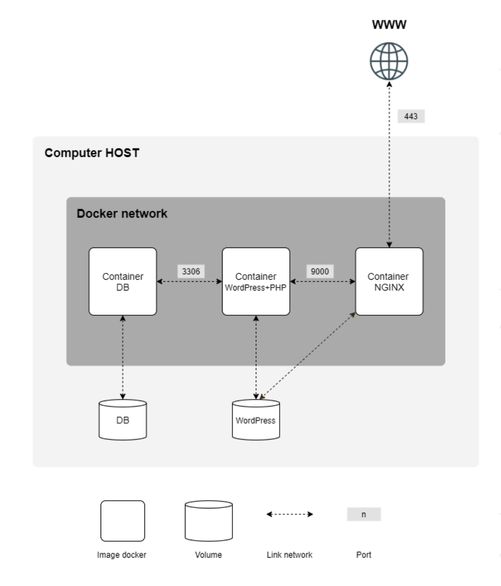

Inception
Infraestructura con Docker: nginx, base de datos y más.
Set up a complete infrastructure using Docker Compose, creating and managing multiple containerized services including NGINX with SSL/TLS, WordPress with php-fpm, and MariaDB.
Hello!, I'm Jose Manuel Florido, 42 Urduliz Fundación Telefónica student, and I'm passionate about programming and technology. I enjoy learning new things and improving my skills in various áreas.
If you want to read my CV, you can find it here.
To see the projects I have worked on, click here.
My linkedin profile is here.
Inception is a project that involves deploying a complete infrastructure using Docker Compose, creating and managing multiple containerized services, including NGINX with SSL/TLS, WordPress with php-fpm, and MariaDB.
The goal of this project is to learn how to work with containers, orchestrate services, and deploy web applications in a controlled and reproducible environment.

Infraestructura con Docker: nginx, base de datos y más.
A powerful and flexible maze generator and solver written in Python.
A fully playable implementation of the classic arcade game Pac-Man.
Mail me to joflorid@student.42.fr